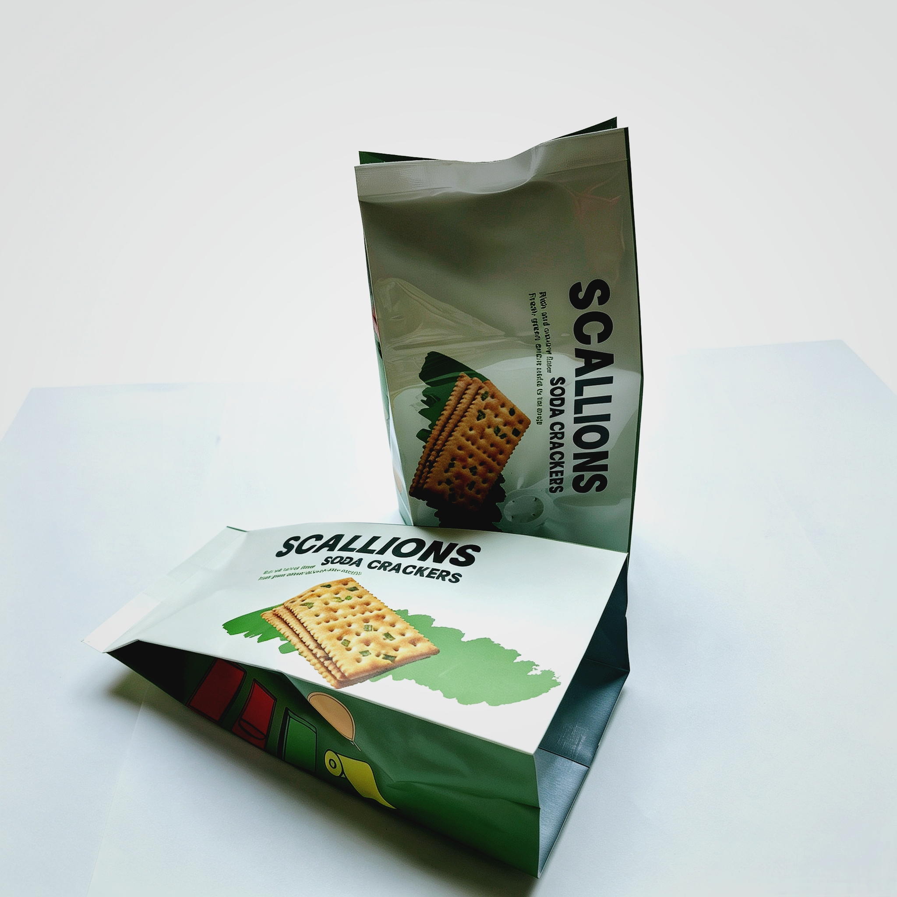

Agile Packaging Strategy: How Digital Printing Empowers Multi-SKU Launches with Zero Plate Fees

In today's fast-moving consumer goods (FMCG) market, brand success relies on continuous innovation, seasonal limited editions, and diverse flavor expansions. For food, coffee, pet treat, and specialty brands, launching multiple Stock Keeping Units (SKUs) is essential to capture varied consumer preferences. However, traditional packaging procurement methods — heavily reliant on traditional rotogravure printing — often create severe financial and logistical roadblocks for multi-SKU strategies.
High cylinder costs, massive minimum order quantities (MOQs), and lengthy setup times make testing new product variants an expensive gamble. This is where agile packaging strategies powered by advanced digital printing transform the supply chain.
1. The Hidden Costs of Traditional Rotogravure for Multi-SKU Brands
Traditional cylinder-based printing requires engraving a separate metal cylinder for every single color and every single SKU variant.
- Heavy Upfront Investment: If a brand wants to launch a new product line with 5 different flavors or sizes, cylinder plate fees alone can quickly accumulate into thousands of dollars before a single pouch is even printed.
- Inflexible Minimum Orders: Traditional rotogravure requires large production runs to offset plate setup costs, forcing brands to tie up cash flow in excessive inventory that risks obsolescence.
- Extended Lead Times: Cylinder engraving and machine alignment slow down time-to-market, missing rapid social media trends or seasonal sales windows.
2. How Digital Printing Eliminates Plate Fees and MOQ Barriers
Digital printing technology bypasses physical printing plates entirely, treating every print run like a digital document.
- Zero Plate Fees: By eliminating cylinder engraving costs, brands can introduce new SKUs, seasonal packages, or regional variations with zero initial plate investment.
- True On-Demand Production: Print exact quantities needed for market testing, influencer sampling, or small-batch promotional runs without paying penalties for low volume.
- Rapid Turnaround Times: Streamlined digital workflows cut lead times dramatically, allowing brands to conceptualize, print, and launch new products in a matter of days rather than weeks.
3. Unleashing Creative Freedom for Seasonal and Regional Campaigns
Agile digital packaging empowers brands to execute marketing strategies that were previously cost-prohibitive:
- Personalized & Variable Data: Print unique promotional codes, regional messages, or custom designs on pouches within the same production run.
- Instant Market Testing: Test a new coffee roast or snack flavor in select retail stores or online channels with minimal risk, gathering consumer feedback before scaling up.
- Vibrant Visual Quality: High-resolution digital presses deliver sharp text, rich color gradients, and striking graphic clarity that rivals traditional rotogravure.
4. Sustainable and Compliant Multi-SKU Scalability
Agile packaging does not mean compromising on quality or sustainability. At Shenying Packing, our digital printing capabilities seamlessly integrate with eco-friendly mono-material structures (such as mono-PE) and BRC-certified food safety standards. Brands can scale their multi-SKU portfolios while staying fully compliant with modern environmental regulations like the EU PPWR.
Conclusion
To stay competitive in a dynamic market, modern food and specialty brands need agility, speed, and cost efficiency. By leveraging digital printing with zero plate fees, brands can test new ideas fearlessly and expand their product lines without financial friction.
At Shenying Packing, we specialize in helping global brands bring multi-SKU visions to life with flexible, low-MOQ, and high-quality digital packaging solutions.
Ready to launch your next multi-SKU product line?
Our digital printing team can help you test new ideas with zero plate fees and low MOQs.
📧 Email: may.lee@shenyingpacking.com
💬 WhatsApp: +86 13424643780